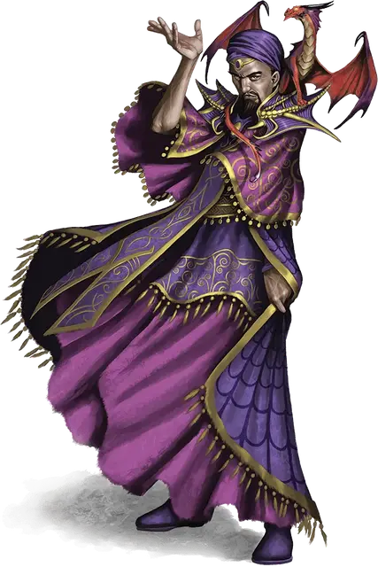

Носящий пурпур Северин
Severin
Средний Гуманоид (Человек), нейтрально-злой, именной НИП

Класс Доспеха 16
Хиты 150 (20к8 + 60)
Скорость 30 футов
| мод | спас | ||
|---|---|---|---|
| СИЛ | 10 | +0 | +0 |
| ЛОВ | 13 | +1 | +5 |
| ТЕЛ | 16 | +3 | +3 |
| мод | спас | ||
|---|---|---|---|
| ИНТ | 17 | +3 | +3 |
| МДР | 12 | +1 | +5 |
| ХАР | 20 | +5 | +5 |
Навыки Магия +7, Религия +7
Сопротивление урону кислота, холод, электричество, яд; дробящий, колющий, рубящий от немагического оружия
Иммунитет к урону огонь
Иммунитет к состояниям отравление, очарование, испуг
Чувства тёмное зрение 60 футов, пассивное Восприятие 11
Языки Общий, Драконий, Инфернальный
Опасность 11 (7200 опыта)
Бонус мастерства +4
Особенности
Специальное снаряжение. . Северин обладает маской королевы драконов [mask of the dragon queen].
Драконье величие. Северин добавляет свой модификатор Харизмы к КД (включено в статистику).
Поджечь врага. . Если Северин наносит урон огнём существу, пока на нём надета Маска Королевы Драконов, цель загорается. В начале каждого хода цели, она получает урон огнём 5 (1к10). Существо в досягаемости может потратить действие, чтобы потушить цель.
Легендарное сопротивление (5/день). Если Северин носит Маску Королевы Драконов и проваливает спасбросок, он может выбрать преуспеть в нём вместо этого.
Действия
Обжигающее касание. . Рукопашная атака заклинанием: +5 к попаданию, досягаемость 5 футов, одна цель. Попадание: 18 (4к8) урона огнём.
Горящий шар. . Дальнобойная атака заклинанием: +5 к попаданию, дистанция 90 футов, одна цель. Попадание: 40 (9к8) урона огнём.
Палящий взрыв. . Северин выбирает точку, которую может видеть, в пределах 60 футов. Каждое существо в 5 футах от этой точки должно совершить спасбросок Ловкости Сл 17. При неудаче, оно получит 18 (4к8) урона огнём, а при успехе - лишь половину этого урона.
Легендарные действия
Северин может предпринимать 3 легендарных действий, пока носит Маску Королевы Драконов выбирая из вариантов ниже. Лишь одно легендарное действие может быть использовано за раз и лишь в конце хода другого существа. Северин восполняет потраченные легендарные действия в начале своего хода.
Атака. . Северин проводит одну атаку.
Огненный телепорт (стоит 2 действия). . Северин, вместе с предметами, надетыми на нём и теми, что у него в руках, телепортируется на расстояние до 60 футов в не занятую клетку, которую он может видеть. Каждое существо в пределах 5 футов от него, до того как он телепортируется, получает 5 (1к10) урона огнём.
Адские цепи (стоит 3 действия). . Северин выбирает целью одно существо, которое видит, в пределах 30 футов от него. Цель опутывают магические цепи из огня. Цель считается опутанной. Опутанная цель получает 21 (6к6) урона огнём в начале каждого своего хода. В конце хода, цель может совершить спасбросок Силы Сл 17, чтобы, при его успехе, завершить этот эффект на себе.